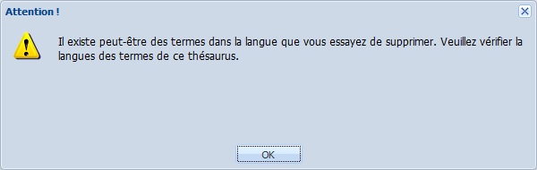
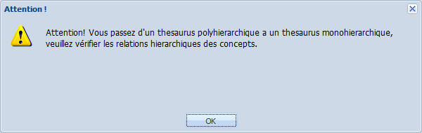

Édition d'un vocabulaire
ÉcranÉditer un Vocabulaire⚓
Vous trouverez ci-dessous des indications sur la manière d'éditer un Vocabulaire, c'est à dire compléter ou modifier les métadonnées descriptives de sa Fiche vocabulaire.
RéglementaireAfficher la Fiche vocabulaire⚓
Pour afficher la Fiche vocabulaire dans la zone de travail, 2 possibilités :
Double-cliquez sur le nom du vocabulaire dans l'explorateur,
ou,
Sélectionnez le vocabulaire dans l'explorateur puis cliquez sur
Afficher sélection.
AttentionImportant⚓
Les champs suivis d'un astérisque rouge sont obligatoires.
- 1 Titre
Saisissez le titre du vocabulaire.
RemarqueRemarque⚓
Ce titre sert à identifier le vocabulaire dans l'explorateur de vocabulaires.
- 2 Auteur
Saisissez le nom de l'auteur du vocabulaire.
ConseilConseil⚓
Cette rubrique est utilisée pour le filtrage des vocabulaires par producteur. Pour cette raison, il peut être préférable de saisir le nom du service producteur en guise d'
Auteurplutôt que le nom d'une personne physique. Dans ce cas, les personnes physiques seront mentionnées dans la rubriqueContributeur. - 3 URL
Saisissez l'adresse du site web du producteur du vocabulaire.
AttentionImportant⚓
L'adresse saisie doit être une URL correctement formée (http://www.exemple.fr). Il est impossible d'enregistrer les métadonnées si le format n'est pas correct.
Truc & astuceExploitation en diffusion⚓
L'URL est exportée sous la forme d'une balise <foaf:homepage/>.
Si vous utilisez la plate-forme de diffusion Ginco-diff[1], cette URL est utilisée pour renvoyer vers le site du producteur du vocabulaire (onglet
Site du producteur).
- 4 Courriel
Saisissez l'adresse email à laquelle le producteur du vocabulaire peut être contacté ou un lien vers un formulaire de contact.
AttentionImportant⚓
L'adresse saisie doit être une adresse courriel correctement formée (mailto:PrenomNom@exemple.com). Il est impossible d'enregistrer les métadonnées si le format n'est pas correct.
Truc & astuceExploitation en diffusion⚓
L'URL est exportée sous la forme d'une balise <foaf:mbox/>.
Si vous utilisez la plate-forme de diffusion Ginco-diff[1], cette adresse est utilisée pour envoyer un message au producteur du vocabulaire (onglet
Contact).
- 5 Contributeur
- 6 Éditeur
- 7 Droits
Détaillez les droits relatifs au vocabulaire (paternité du contenu ? copyright ? licence ?).
- 8 Description
Décrivez votre vocabulaire (objectifs, présentation...).
- 9 Couverture
Précisez la couverture chronologique et/ou spatiale de votre vocabulaire.
ExempleExemple⚓
Un vocabulaire de l'architecture en France aura pour couverture géographique le territoire national ("France") et comme couverture chronologique "de l'antiquité à nos jours".
RemarqueRemarque⚓
Saisissez une valeur par ligne. Autant d'éléments que de lignes seront générés lors de l'export SKOS.
- 10 Sujet
Saisissez quelques mots-clés permettant de caractériser le sujet de votre vocabulaire.
RemarqueRemarque⚓
Saisissez une valeur par ligne. Autant d'éléments que de lignes seront créés lors de l'export SKOS.
- 11 Type
Sélectionnez dans la liste déroulante le type du vocabulaire.
RemarqueRemarque⚓
La liste des valeurs est paramétrable par l'administrateur de l'application, en fonction des besoins.
- 12 Format(s)
Sélectionnez dans la liste déroulante le ou les formats de mise à disposition du vocabulaire.
RemarqueRemarque⚓
Il est possible de sélectionner plusieurs formats parmi la liste déroulante.
Cette information est déclarative ; elle n'est pas liée à des fonctionnalités de Ginco.
RemarqueRemarque⚓
La liste des valeurs est paramétrable par l'administrateur de l'application, en fonction des besoins.
- 13 Langue(s)
Sélectionnez dans la liste déroulante la langue du vocabulaire.
RemarqueThésaurus multilingue⚓
Il est possible de sélectionner plusieurs langues par un simple clic dans la liste déroulante afin de créer des
Termesdans différentes langues.La suppression d'une langue se fait en cliquant à nouveau sur la langue sélectionnée.
AttentionAttention⚓
Il est possible d'ajouter et de supprimer des langues à un vocabulaire en cours de conception.
Dans le cas de la suppression d'une langue, il vous appartient de contrôler la cohérence des termes créés dans la langue en question !
Au moment de supprimer une langue, un message d'alerte vous rappelle ce risque.
RemarqueRemarque⚓
La liste des valeurs est paramétrable par l'administrateur de l'application, en fonction des besoins.
- 14 Concepts TT par défaut
Cochez la case
Concepts TT par défautsi vous souhaitez que les nouveauxConceptscréés soient automatiquement rangés dans l'arborescence des concepts à leur enregistrement. Si non, les nouveauxConceptssont rangés dans lesConcepts orphelins.ConseilConseil⚓
L'activation ou non de cette option permet la conception de vocabulaires selon 2 approches différentes.
L'option est activée lorsqu'on veut rendre immédiatement disponibles dans l'arborescence des concepts les nouveaux
Conceptsintégrés dans le vocabulaire.L'option n'est pas activée lorsque l'on souhaite conserver des concepts ou des branches hors de l'arborescence des concepts (
Concepts orphelins), durant une phase d'élaboration.
ComplémentEn savoir plus...⚓
Pour en savoir plus sur la notion de Concepts TT : Concept ?
- 15 Polyhiérarchique
Cochez la case
Polyhiérarchiquesi vous souhaitez autoriser l'attribution de plusieurs parents à unConcept. Si non, lesConceptsne peuvent avoir qu'un parent.AttentionAttention⚓
Il est possible d'autoriser ou d'interdire la polyhiérarchie des
Conceptsd'un vocabulaire en cours de conception.Dans le cas de l'interdiction de la polyhiérarchie, il vous appartient de contrôler la cohérence des parents des
Conceptscréés ! Concrètement, il ne vous sera plus possible de créer de nouvelles polyhiérarchies, mais les polyhiérarchies existantes seront conservées jusqu'à intervention de votre part.Au moment d'interdire la polyhiérarchie, un message d'alerte vous rappelle ce risque.
 - 16 Ressource(s) associée(s)
Saisissez des informations sur les publications associées à l'aide de ce champ de texte libre.
Pour ajouter des liens externes (vers une URL, une adresse courriel...) , sélectionnez un (ou plusieurs) mot et cliquez sur le bouton
 .
.Truc & astuceExploitation en diffusion⚓
Si vous utilisez la plate-forme de diffusion Ginco-diff[1], vous pouvez saisir dans cette rubrique l'URI d'une ressource qui sera accessible depuis l'onglet
En savoir plus. - 17 Source(s)
Saisissez des informations sur les ressources (papier ou en ligne) ayant servi de sources à l'élaboration du vocabulaire.
Pour ajouter des liens externes (vers une URL, une adresse courriel...) , sélectionnez un (ou plusieurs) mot et cliquez sur le bouton
.
{kind=link}
{kind=link}
{kind=link}
{kind=link}
{kind=link}
{kind=link}
{kind=link}
{kind=link}
{kind=link}
{kind=link}
{kind=link}
{kind=link}
{kind=link}
{kind=link}
{kind=link}
{kind=link}
{kind=link}